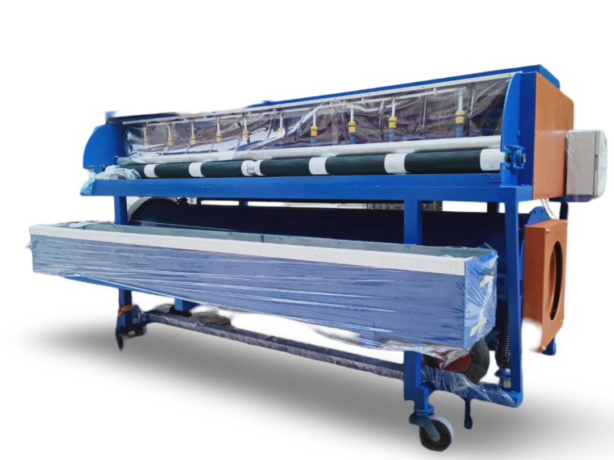

.jpg)
.jpg)
.jpg)
.jpg)
.jpg)
.jpg)
.jpg)
.jpg)
.jpg)
.jpg)
.jpg)
.jpg)
.jpg)
.jpg)
.jpg)
.jpg)
.jpg)
.jpg)
.jpg)
.jpg)
machine a laver et centrifugeuse 2 en 1
- capacité jusqu'à 15 tapis par heure possibilité de laver 1 à 3 tapis en même temps possibilité de fonctionnement continu sans éteindre l'appareil trois sections de lavage pompe à pression intégrée 92 l/min tuyau mobile facilitant le déplacement des tapis sur un transport incliné chariot deux étagères pratiques pour stocker des produits chimiques ou des accessoires pas besoin d'alimentation en air comprimé panneau de commande simple fonction d'enroulement du tapis régulation douce de la pression des brosses à disque avec actionneur électrique jusqu'à 100 kg remplacement simple et rapide des brosses réglage de la vitesse d'avancement du tapis avec possibilité de interrupteur d'urgence réversible réglage de la plage de fonctionnement de la section de lavage et de rinçage les moteurs et les éléments de transmission cachés derrière les couvercles garantissent une sécurité à 100% possibilité d'inspection visuelle du tapis pendant tout le processus de lavage dispositif actionné par un seul opérateur petites dimensions et poids permettant une installation dans petites blanchisseries, appareil équipé de roues pivotantes, capacité jusqu'à 15 tapis par heure
- possibilité de laver 1 à 3 tapis en même temps
- possibilité de fonctionnement continu sans éteindre l'appareil
- trois sections de lavage
- pompe à pression intégrée 92 l/min
- un tuyau mobile qui facilite le transfert des tapis vers un chariot de transport incliné
- deux étagères pratiques pour ranger des produits chimiques ou des accessoires
- pas besoin d'alimentation en air comprimé
- panneau de commande simple
- fonction de roulement de tapis
- régulation en douceur de la pression des brosses à disque avec un actionneur électrique jusqu'à 100 kg
- remplacement simple et rapide des brosses
- régulation de la vitesse d'avance du tapis avec possibilité d'inversion
- interrupteur d'arrêt d'urgence
- régulation de la plage de fonctionnement des sections de lavage et de rinçage
- les moteurs et les éléments de transmission cachés derrière les capots garantissent une sécurité à 100 %
- possibilité d'inspection visuelle du tapis pendant tout le processus de lavage
- appareil exploité par un seul opérateur
- petite taille et poids permettant une installation dans de petites blanchisseries
- appareil équipé de roues pivotantes
Avantage
Données techniques
| Caractéristique | Détail |
|---|---|
| Largeur maximale du tapis | 3,0 m |
| Efficacité | 90 m²/heure |
| Longueur | 3450 mm |
| Largeur | 1230 mm |
| Hauteur | 1580 mm |
| Poids | 560 kg |
| Matériel | Galvanisé à chaud |
| Hauteur de chargement | 800 mm |
| Type de suspension | Roues |
| Puissance du moteur | 5,9 kW |
| Connexion | 16A 5P 400V |
| Onduleur | Oui |
| Inverse | Oui |
| Garantie | 12 mois |